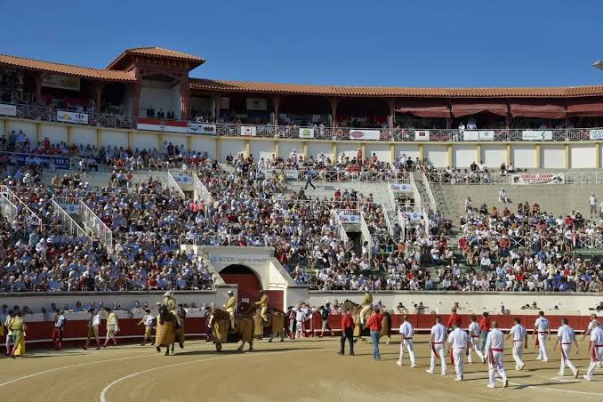

Feria de
BéziersGrande fête populaire du Languedoc


⟹ Fêtes & traditions ⟸
La Feria de Béziers est le grand rendez-vous populaire du mois d’août dans la capitale biterroise. Elle s’est structurée au XXe siècle autour des arènes, de la tradition taurine et d’une vaste fête de rue qui gagne les Allées Paul-Riquet, les places et les quartiers du centre. Aujourd’hui, l’événement associe spectacles taurins, bodegas, bandas, concerts, danse, gastronomie, animations équestres et rendez-vous familiaux.
Béziers entretient depuis longtemps une culture taurine et équestre marquée par les influences languedociennes, camarguaises et ibériques. Pendant la feria, la ville change de rythme : le blanc et le rouge dominent les tenues, les peñas et bandas occupent l’espace sonore, tandis que les arènes restent un pôle majeur de la programmation.

La fréquentation place la manifestation parmi les plus importantes fêtes populaires du sud de la France. La Ville de Béziers a annoncé 1,2 million de visiteurs pour l’édition 2025, un record local ; l’office de tourisme communique plus généralement sur près d’un million de participants. Cette ampleur explique que la Feria soit souvent citée parmi les grandes ferias françaises, aux côtés notamment de Nîmes et Dax.
Repère historique. La première Feria de Béziers est organisée les 14 et 15 août 1968. Son programme mêle alors un spectacle de variétés avec Pierre Perret, deux novilladas et la troupe comico-taurine El Gallo. Cette naissance s’inscrit dans une histoire taurine plus ancienne : les arènes actuelles sont édifiées en 1897 et accueillent dès cette époque novilladas et corridas.
Une fête qui déborde largement des arènes. Le modèle biterrois repose sur la complémentarité entre la plaza et la ville : à la sortie des spectacles, les bodegas, casitas, musiques de rue, animations équestres et rendez-vous flamencos prolongent la fête dans le centre. Cette articulation explique que la Feria soit devenue autant un événement urbain et populaire qu’un rendez-vous taurin.
Pendant quelques jours, la feria superpose plusieurs fêtes : celle des arènes, celle des rues, celle des familles en journée et celle des nuits biterroises.
— Synthèse documentaire — L’Âme des RégionsLa Feria de Béziers n’est pas une simple transposition d’un modèle espagnol. Elle est devenue un objet culturel biterrois, nourri de traditions taurines françaises, de proximité avec la Camargue, d’esthétiques hispaniques et d’une forte sociabilité méditerranéenne.
La musique joue un rôle essentiel : bandas de cuivres, répertoires festifs, flamenco, musiques gitanes et bals populaires créent une continuité entre les arènes et la rue. Le repas partagé, les terrasses, les bodegas et les déplacements en groupe font partie intégrante de l’expérience.
La tauromachie est par ailleurs un sujet de débat public. Une fiche patrimoniale peut donc distinguer la réalité historique et culturelle de la feria des controverses contemporaines qui entourent les corridas, sans réduire l’événement à cette seule composante.